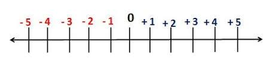
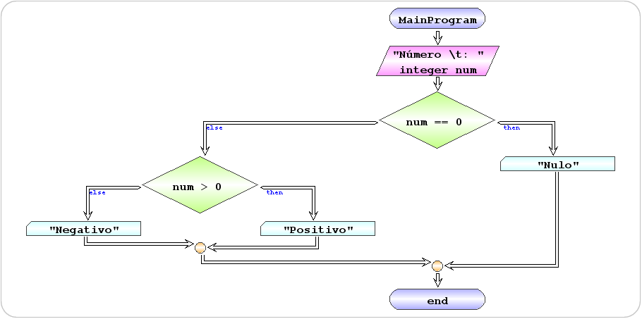

| Exercício | Dificuldade | Pontos | Data limite | Créditos |
|---|---|---|---|---|
| Ficha04_005 | Demonstration | 1.0 | (c)M@nso 2020 |
| Problema | Fluxograma | Algorithmi |
|---|---|---|
 |
 | begin MainProgram
read integer num "Número \t: "
if num == 0 then
write "Nulo"
else
if num > 0 then
write "Positivo"
else
write "Negativo"
end if
end if
end MainProgram
|
| Input | Output |
|---|---|